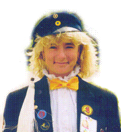
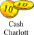

|  |  Cash: Charlott FriskCharlott har varit pryo, både hos Tom Tits och i D-Group.Är man pryo för man skylla sig själv, men det tänker inte Charlott göra när hon strulat bort alla våra pengar. Hon tänker skylla på förra årets cash-groupie eftersom han inte har lämnat henne nått testamente, så de så! Charlotts favorit låt är Harvey-låten den tycker Charlott är kul för den kan man sjunga med Charlott-text. Charlott tycker även om låten Partaj för den är så bra att partajja till. Snart ska Chaplutt flytta till en riktig lägenhet. Uj, uj, uj vad kul vi andra ska ha där.. Hej då! |
|
Är en: IT: |
Chaplutt q95chafr@und.ida.liu.se |